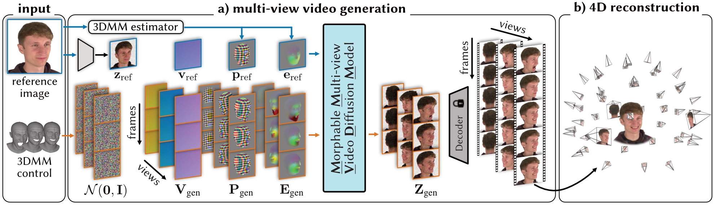
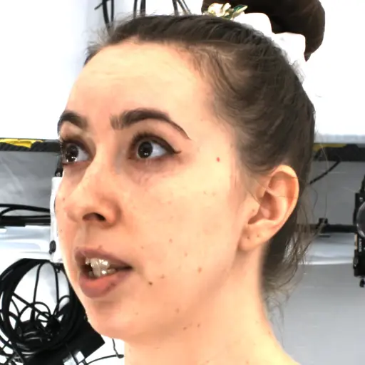
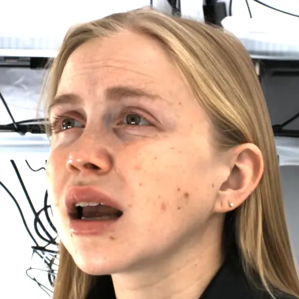
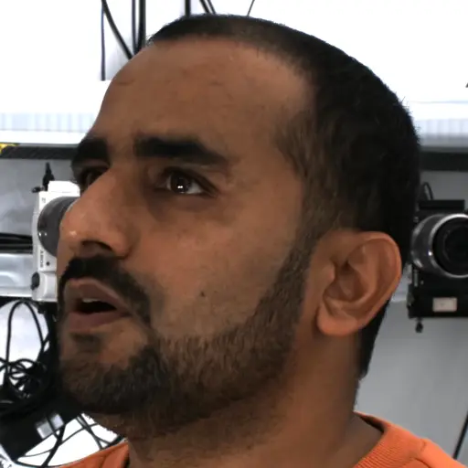

Gallery
prompts
tracking
3D visualization







@inproceedings{taubner2025mvp4d,
author = {Taubner, Felix and Zhang, Ruihang and Tuli, Mathieu and Bahmani, Sherwin and Lindell, David B.},
title = {MVP4D: Multi-View Portrait Video Diffusion for Animatable 4D Avatars},
booktitle = {Proceedings of the SIGGRAPH Asia 2025 Conference Papers},
month = {December},
year = {2025},
pages = {1-11}
}